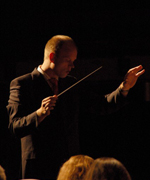

Studenten Harmonie Orkest Twente
The Student Wind Orchestra of Twente was founded in 1991 and is associated with Twente University in Enschede. On average, the orchestra is formed by about 55 musicians from the university and other nearby schools. Despite its relatively young age, SHOT has already established a tradition of giving two concerts each year at (or close to) the university. Next to these performances, SHOT has frequently performed at other locations in The Netherlands. Furthermore, the orchestra has a biannual concert tour. The orchestra repertoire varies per concert and combines both famous works for wind orchestra, e.g. Danse Funambulesque (Jules Strens) and Sinfonia "Il Fiume" (Jurriaan Andriessen), as well as new original wind music such as Godspeed (Stephen Melillo), Jeanne d'Arc (Alex Poelman) and Les Voyages de Gulliver (Maxime Aulio).
Since 1993, the orchestra is directed by Ronny Buurink. Ronny Buurink studied the clarinet at the Enschede Conservatoire and subsequently pursued his degree at the Amsterdam Sweelinck Conservatoire with Piet Honingh, clarinet soloist of the Royal Concertgebouw Orchestra. Next to the Studenten Harmonie Orkest Twente, he is conductor of the wind orchestra of music society Euphonia in Eibergen. Besides, he is the clarinet soloist and second conductor in the large wind orchestra (Groot Harmonieorkest) of Music Society Wilhelmina Glanerbrug. In 1994, he succesfully obtained his first phase degree in brass ensemble conducting. In 2001, Ronny resumed his brass ensemble conducting studies at the Enschede Messiaen Academy, where he successfully obtained his second phase degree with Hennie Ramaekers as his main subject teacher.